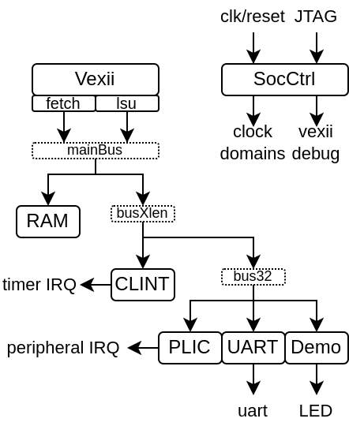

MicroSoc
MicroSoC is a little SoC based on VexiiRiscv and a tilelink interconnect.
Its goals are :
To provide a simple reference design
To be a simple and light FPGA SoC
Target a high frequency of operation, but not a high IPC (by default)
Here is a architecture diagram :
Here you can see the default vexiiriscv architecture for this SoC :

You can find its implementation here https://github.com/SpinalHDL/VexiiRiscv/blob/dev/src/main/scala/vexiiriscv/soc/micro
MicroSoc.scala : Contains the SoC toplevel
MicroSocGen.scala : Contains the scala main which can be used to generate the SoC verilog
MicroSocSim.scala : Contains a simple SpinalSim testbench for the SoC
The MicroSoC code is commented in a way which should help non-initiated to understand what is happening. (this is an invitation to read the code ^^)
Verilog generation
To generate the SoC verilog, you can run :
# Default configuration
sbt "runMain vexiiriscv.soc.micro.MicroSocGen"
# SoC with 32 KB + RV32IMC running at 50 Mhz:
sbt "runMain vexiiriscv.soc.micro.MicroSocGen --ram-bytes=32768 --with-rvm --with-rvc --system-frequency=50000000"
# List all the parameters available
sbt "runMain vexiiriscv.soc.micro.MicroSocGen --help"
Simulation (SpinalSim / Verilator)
If you have Verilator installed, you can run a simulation by doing :
# Default configuration
sbt "runMain vexiiriscv.soc.micro.MicroSocSim"
# List all the parameters available
sbt "runMain vexiiriscv.soc.micro.MicroSocSim --help"
Here is a set of important command line arguments :
Command |
Description |
|---|---|
--load-elf ELF_FILE |
Will load elf file into the ram/rom/flash of the SoC |
--trace-fst |
A FST wave of all the DUT signals will be stored in simWorkspace/MicroSocSim/test (you can open it using GTKwave) |
--trace-konata |
A konata trace of all the executed instruction will be stored in simWorkspace/MicroSocSim/test (you can open it using https://github.com/shioyadan/Konata) |
Note that the default VexiiRiscv configuration is RV32I, with a relatively low area/performance. You can for instance get more performance by adding --allow-bypass-from=0 --with-rvm --with-btb --with-ras --with-gshare
While the simulation is running you can connect to it using openocd as if it was real hardware :
openocd -f src/main/tcl/openocd/vexiiriscv_sim.tcl
Adding a custom peripheral
Let's say you want to design a peripheral and then add it to the SoC, the MicroSoc contains one example of that via PeripheralDemo.scala. Take a look at it, its code is extensively commented :
This peripheral example is a very simple one which provide the CPU access to leds, buttons and an interrupt function of the buttons value.
You can see in the diagram above :
PeripheralDemo : Which is our custom peripheral in its traditional sense (a hardware Component / Module). It use regular SpinalHDL stuff.
mapper : This is a tool which ease the creation of peripherals register file. Instead of having stuff like big switch case on the bus address, you just need to say "Create a RW register at this address" in a more natural language.
BufferCC : Used to avoid metastability when we use the buttons value in our hardware (this is a chain of 2 flip-flop)
PeripheralDemoFiber : This is sort of the integration layer for our PeripheralDemo into a SoC. This serve a few purposes. It handle the Tilelink parameters negotiation / propagation, aswell as exporting the leds and buttons directly to the MicroSoc io.
Node : This is an instance of the tilelink bus in our SoC. It is used for parameter negotiation/propagation as well as to get the hardware bus instance.
You can then add that peripheral in the toplevel around the other peripherals by :
val demo = new PeripheralDemoFiber(new PeripheralDemoParam(12,16))
demo.node at 0x10003000 of bus32
plic.mapUpInterrupt(3, demo.interrupt)
This peripheral is already integrated into MicroSoC as a demo but disabled by default. To enable it, will need to provide a specific command line parameter. For instance :
sbt "runMain vexiiriscv.soc.micro.MicroSocSim --demo-peripheral leds=16,buttons=12"
Exporting an APB3 bus to the toplevel
Let's say you want to allow the CPU to access a APB3 peripheral which stand outside the SoC toplevel. Here is how you can do so by adding code to the MicroSoc.system.peripheral area :
class MicroSoc(p : MicroSocParam) extends Component {
..
val system = new ClockingArea(socCtrl.system.cd) {
..
val peripheral = new Area {
..
// Let's define a namespace to contains all our logic
val exported = new Area{
// Let's define tl as our Tilelink peripheral endpoint (before the APB3 bridge)
val tl = tilelink.fabric.Node.slave()
tl at 0x10006000 of bus32 // Lets map our tilelink bus in the memory space
// Let's define our APB3 bus which will be exposed to the IO of the SoC
val bus = master(Apb3(addressWidth = 12, dataWidth = 32))
// Let's define a Fiber thread which will
// - Handle the tilelink parameter negotiation
// - Instantiate the APB3 bridge and connect the buses
val fiber = Fiber build new Area{
// Here we go with the tilelink negotiation
tl.m2s.supported.load(
M2sSupport(
addressWidth = bus.config.addressWidth,
dataWidth = bus.config.dataWidth,
transfers = M2sTransfers(
get = tilelink.SizeRange(4),
putFull = tilelink.SizeRange(4)
)
)
)
tl.s2m.none()
// Create the hardware bridge from tilelink to APB3 and connect the buses
val bridge = new tilelink.Apb3Bridge(tl.bus.p.node)
bridge.io.up << tl.bus
bridge.io.down >> bus
}
}
}
}
}
If you want the CPU to be able to execute code located in the APB3 peripheral, then you will need to tag the tl bus with :
val tl = tilelink.fabric.Node.slave()
tl at 0x10006000 of bus32 // Lets map our tilelink bus in the memory space
tl.addTag(spinal.lib.system.tag.PMA.EXECUTABLE)
Adding a custom instruction
Let's say you want to add a custom instruction to the MicroSoc. Let's use the Plugin implementation which does SIMD add.
In the MicroSoc, you can find :
val cpu = new TilelinkVexiiRiscvFiber(p.vexii.plugins())
We need to edit this into :
// Instantiate all the plugins from the command line arguments
val pluginsArea = p.vexii.pluginsArea()
// Add our custom plugin, pluginsArea.early0 refer to the default execute lane of the CPU
pluginsArea.plugins += new vexiiriscv.execute.SimdAddPlugin(pluginsArea.early0)
// Build the CPU
val cpu = new TilelinkVexiiRiscvFiber(pluginsArea.plugins)
TODO add software example